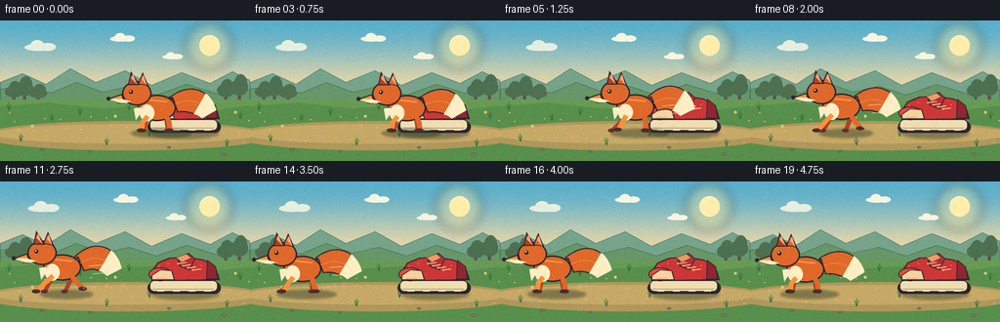
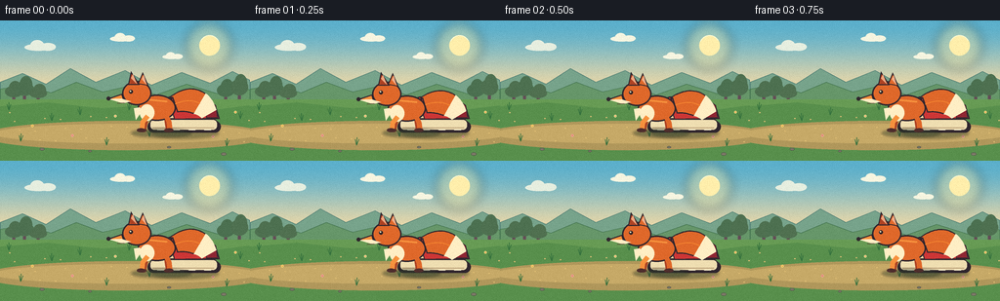

CODING AGENTS AS PIXEL WORLD MODELS
traex/DeepSeek-V4.1-Flash · dynamic_spatial_relationship_0026
点击播放 · 原生 RGB 像素
逐轮保存的候选
回放视频、检查图与代码变化。
每份候选均可单独播放。实际图片检查记录在下方工具轨迹中。
候选 01播放与检查图
点击播放 · 原生 RGB 像素


展开代码变化
--- 上一保存版本
+++ 本次保存版本
@@ -0,0 +1,400 @@
+from __future__ import annotations
+
+import math
+from pathlib import Path
+
+import numpy as np
+from PIL import Image, ImageDraw, ImageFilter
+
+import artifact_io
+
+
+W, H = 256, 144
+FRAMES = 20
+SS = 4
+
+INK = (48, 38, 46, 255)
+FOX = (223, 104, 42, 255)
+FOX_LIGHT = (246, 145, 61, 255)
+FOX_DARK = (173, 66, 35, 255)
+CREAM = (255, 238, 196, 255)
+SOLE = (239, 222, 177, 255)
+SHOE_RED = (205, 54, 54, 255)
+SHOE_DARK = (143, 38, 51, 255)
+
+
+def s(value: float) -> int:
+ return int(round(value * SS))
+
+
+def box(x0: float, y0: float, x1: float, y1: float) -> tuple[int, int, int, int]:
+ return s(x0), s(y0), s(x1), s(y1)
+
+
+def pts(values: list[tuple[float, float]]) -> list[tuple[int, int]]:
+ return [(s(x), s(y)) for x, y in values]
+
+
+def polygon(draw: ImageDraw.ImageDraw, values, fill, outline=INK, width=1.2):
+ draw.polygon(pts(values), fill=fill, outline=outline, width=max(1, s(width)))
+
+
+def ellipse(draw: ImageDraw.ImageDraw, values, fill, outline=INK, width=1.0):
+ draw.ellipse(box(*values), fill=fill, outline=outline, width=max(1, s(width)))
+
+
+def rounded(draw: ImageDraw.ImageDraw, values, radius, fill, outline=INK, width=1.0):
+ draw.rounded_rectangle(
+ box(*values), radius=s(radius), fill=fill, outline=outline, width=max(1, s(width))
+ )
+
+
+def line(draw: ImageDraw.ImageDraw, values, fill, width, joint="curve"):
+ draw.line(pts(values), fill=fill, width=max(1, s(width)), joint=joint)
+
+
+def blend(a, b, t):
+ return tuple(round(a[i] * (1 - t) + b[i] * t) for i in range(3)) + (255,)
+
+
+def quadratic(p0, p1, p2, steps=24):
+ points = []
+ for i in range(steps + 1):
+ t = i / steps
+ x = (1 - t) ** 2 * p0[0] + 2 * (1 - t) * t * p1[0] + t**2 * p2[0]
+ y = (1 - t) ** 2 * p0[1] + 2 * (1 - t) * t * p1[1] + t**2 * p2[1]
+ points.append((x, y))
+ return points
+
+
+def make_background(frame: int) -> Image.Image:
+ image = Image.new("RGB", (W * SS, H * SS), (126, 197, 213))
+ draw = ImageDraw.Draw(image, "RGBA")
+
+ top = (91, 175, 203)
+ horizon = (244, 218, 165)
+ for y in range(82):
+ t = y / 81
+ color = blend(top, horizon, t * t * (3 - 2 * t))
+ draw.rectangle((0, s(y), W * SS, s(y + 1) + 1), fill=color)
+
+ # Soft sun and its atmospheric halo.
+ halo = Image.new("RGBA", image.size, (0, 0, 0, 0))
+ halo_draw = ImageDraw.Draw(halo, "RGBA")
+ halo_draw.ellipse(box(190, 2, 238, 50), fill=(255, 230, 151, 85))
+ halo = halo.filter(ImageFilter.GaussianBlur(s(5)))
+ image = Image.alpha_composite(image.convert("RGBA"), halo)
+ draw = ImageDraw.Draw(image, "RGBA")
+ draw.ellipse(box(204, 15, 225, 36), fill=(255, 238, 171, 255))
+ draw.arc(box(204, 15, 225, 36), 205, 330, fill=(255, 249, 208, 255), width=s(1))
+
+ # Small drifting clouds.
+ drift = frame * 0.32
+ for cx, cy, size, shade in ((37, 24, 1.0, 246), (122, 16, 0.8, 250), (174, 35, 0.65, 250)):
+ x = cx + drift
+ cloud = (246, 245, 224, 225) if shade > 248 else (230, 238, 223, 210)
+ ellipse(draw, (x - 12 * size, cy, x + 16 * size, cy + 7 * size), cloud, outline=None, width=0)
+ ellipse(draw, (x - 6 * size, cy - 4 * size, x + 8 * size, cy + 7 * size), cloud, outline=None, width=0)
+ ellipse(draw, (x + 4 * size, cy - 1 * size, x + 20 * size, cy + 7 * size), cloud, outline=None, width=0)
+
+ # Layered hills create depth without competing with the actors.
+ polygon(
+ draw,
+ [(0, 77), (0, 63), (23, 54), (47, 65), (72, 49), (98, 63), (128, 51),
+ (155, 66), (186, 53), (215, 64), (238, 52), (256, 61), (256, 83)],
+ (119, 163, 139, 255),
+ outline=(83, 129, 118, 255),
+ width=0.7,
+ )
+ polygon(
+ draw,
+ [(0, 82), (0, 70), (28, 66), (52, 74), (78, 63), (105, 73), (132, 67),
+ (160, 76), (191, 65), (223, 75), (247, 68), (256, 71), (256, 91)],
+ (102, 150, 105, 255),
+ outline=(71, 119, 82, 255),
+ width=0.8,
+ )
+
+ # Distant tree line.
+ for tx, th, tone in ((14, 16, 71), (25, 21, 67), (39, 13, 77), (231, 18, 62), (245, 23, 69)):
+ trunk = (100, 77, 87, 255)
+ draw.rectangle(box(tx - 1.5, 83 - th * 0.45, tx + 1.5, 87), fill=trunk)
+ foliage = (55 + tone // 3, 112, 80, 255)
+ ellipse(draw, (tx - 9, 83 - th, tx + 9, 83 - th * 0.27), foliage, outline=None, width=0)
+ ellipse(draw, (tx - 5, 78 - th, tx + 8, 83 - th * 0.4), foliage, outline=None, width=0)
+
+ # Meadow bands and a worn earth path.
+ draw.rectangle(box(0, 81, 256, 144), fill=(103, 155, 84, 255))
+ polygon(draw, [(0, 88), (48, 84), (104, 90), (168, 86), (224, 91), (256, 87), (256, 144), (0, 144)],
+ (88, 143, 76, 255), outline=None, width=0)
+ ellipse(draw, (-18, 103, 276, 133), (176, 151, 91, 255), outline=None, width=0)
+ ellipse(draw, (-6, 106, 265, 126), (198, 169, 103, 255), outline=None, width=0)
+ for i in range(30):
+ x = (i * 47 + 9) % 256
+ y = 94 + (i * 29) % 31
+ draw.ellipse(box(x, y, x + 1.8, y + 0.9), fill=(222, 189, 116, 145))
+
+ # Grass tufts, tiny flowers, and pebbles.
+ tuft_positions = [(9, 92), (21, 124), (53, 103), (82, 97), (109, 128),
+ (132, 92), (153, 119), (201, 95), (232, 129), (246, 101)]
+ for i, (x, y) in enumerate(tuft_positions):
+ sway = math.sin(frame * 0.65 + i * 1.7) * 0.55
+ for dx, dy in ((-2, -6), (0, -8), (2, -6)):
+ line(draw, [(x, y), (x + dx + sway, y + dy)], (51, 112, 61, 255), 0.75)
+ for x, y, color in ((33, 108, (255, 228, 119)), (74, 118, (246, 160, 170)),
+ (118, 98, (255, 239, 166)), (218, 119, (240, 169, 182)),
+ (241, 94, (255, 231, 137))):
+ draw.ellipse(box(x - 1.2, y - 1.2, x + 1.2, y + 1.2), fill=color + (255,))
+ draw.ellipse(box(x - 0.5, y - 0.5, x + 0.5, y + 0.5), fill=(214, 129, 61, 255))
+ for x, y, r in ((43, 132, 2.5), (92, 134, 1.8), (173, 130, 2.0), (229, 137, 2.8)):
+ ellipse(draw, (x - r, y - r * 0.5, x + r, y + r * 0.5), (126, 123, 104, 255),
+ outline=(83, 83, 76, 255), width=0.4)
+
+ return image.convert("RGB")
+
+
+def draw_shoe(image: Image.Image):
+ draw = ImageDraw.Draw(image, "RGBA")
+ cx, base = 190, 114
+
+ # Ground shadow.
+ shadow = Image.new("RGBA", image.size, (0, 0, 0, 0))
+ sd = ImageDraw.Draw(shadow, "RGBA")
+ sd.ellipse(box(cx - 35, base - 4, cx + 34, base + 7), fill=(49, 65, 43, 115))
+ shadow = shadow.filter(ImageFilter.GaussianBlur(s(1.6)))
+ image = Image.alpha_composite(image.convert("RGBA"), shadow)
+ draw = ImageDraw.Draw(image, "RGBA")
+
+ # Outsole and midsole.
+ rounded(draw, (cx - 39, base - 11, cx + 36, base + 1), 6, INK, outline=INK, width=0)
+ rounded(draw, (cx - 37, base - 13, cx + 33, base - 1), 5, SOLE, outline=INK, width=1)
+ line(draw, [(cx - 34, base - 4), (cx + 29, base - 4)], (191, 164, 124, 255), 1)
+ for x in (cx - 29, cx - 13, cx + 3, cx + 19):
+ line(draw, [(x, base - 2), (x + 7, base - 2)], (255, 244, 209, 255), 0.9)
+
+ # Main red sneaker upper, with a rounded toe and raised heel.
+ upper = [
+ (cx - 35, base - 12), (cx - 35, base - 22), (cx - 29, base - 31),
+ (cx - 17, base - 36), (cx + 2, base - 37), (cx + 19, base - 34),
+ (cx + 31, base - 26), (cx + 35, base - 13),
+ ]
+ polygon(draw, upper, SHOE_RED, outline=INK, width=1.3)
+ ellipse(draw, (cx - 38, base - 26, cx - 14, base - 12), (226, 76, 63, 255), outline=INK, width=1.1)
+
+ # Toe cap and heel reinforcement.
+ polygon(draw, [(cx - 35, base - 18), (cx - 26, base - 24), (cx - 14, base - 23),
+ (cx - 11, base - 13), (cx - 35, base - 13)], (244, 210, 158, 255), outline=INK, width=0.9)
+ polygon(draw, [(cx + 22, base - 34), (cx + 31, base - 27), (cx + 33, base - 14),
+ (cx + 21, base - 14)], SHOE_DARK, outline=INK, width=0.8)
+
+ # Tongue, collar, laces, and eyelets.
+ polygon(draw, [(cx - 9, base - 36), (cx + 3, base - 41), (cx + 10, base - 35),
+ (cx + 4, base - 23), (cx - 6, base - 27)], (183, 46, 52, 255), outline=INK, width=1)
+ polygon(draw, [(cx - 10, base - 36), (cx + 1, base - 40), (cx + 6, base - 36),
+ (cx - 4, base - 31)], (242, 152, 98, 255), outline=INK, width=0.6)
+ for i in range(4):
+ x = cx - 8 + i * 5.2
+ y = base - 30 + i * 2.2
+ line(draw, [(x, y), (x + 8, y - 1.2)], (255, 238, 190, 255), 1.0)
+ draw.ellipse(box(x - 0.8, y - 0.8, x + 0.8, y + 0.8), fill=(240, 190, 83, 255))
+
+ # Stitching gives the shoe a finished, readable silhouette.
+ for x, y in ((cx - 27, base - 27), (cx - 18, base - 30), (cx + 1, base - 31), (cx + 16, base - 28)):
+ draw.ellipse(box(x - 0.6, y - 0.6, x + 0.6, y + 0.6), fill=(249, 139, 88, 255))
+ line(draw, [(cx - 30, base - 15), (cx - 19, base - 15)], (255, 130, 83, 255), 0.6)
+ return image
+
+
+def fox_position(frame: int) -> tuple[float, float]:
+ # Hold, anticipate, dash, then settle with the shoe fully to the right.
+ keys = [
+ (0, 163), (3, 163), (4, 154), (5, 141), (6, 126), (7, 111),
+ (8, 96), (9, 83), (10, 73), (11, 66), (12, 61), (13, 58),
+ (14, 56), (16, 56), (18, 58), (19, 59),
+ ]
+ if frame <= keys[0][0]:
+ return float(keys[0][1]), 114
+ for (f0, x0), (f1, x1) in zip(keys, keys[1:]):
+ if frame <= f1:
+ t = (frame - f0) / (f1 - f0)
+ t = t * t * (3 - 2 * t)
+ return x0 + (x1 - x0) * t, 114
+ return 59.0, 114
+
+
+def draw_fox(image: Image.Image, cx: float, base: float, frame: int):
+ draw = ImageDraw.Draw(image, "RGBA")
+ running = 4 <= frame <= 14
+ settling = frame >= 15
+ phase = (frame - 3) * 1.72
+ stride = math.sin(phase)
+ bob = -1.6 * abs(math.sin(phase)) if running else 0.0
+ if frame <= 3:
+ bob = 0.8 * math.sin(frame * 0.9)
+ if settling:
+ bob = -0.4 * math.sin((frame - 15) * 1.2)
+
+ body_y = base + bob
+
+ # Fox shadow, shortening as the body lifts.
+ shadow = Image.new("RGBA", image.size, (0, 0, 0, 0))
+ sd = ImageDraw.Draw(shadow, "RGBA")
+ width = 29 - 2.5 * abs(bob)
+ sd.ellipse(box(cx - width, base - 3, cx + width + 4, base + 6), fill=(47, 63, 42, 120))
+ shadow = shadow.filter(ImageFilter.GaussianBlur(s(1.2)))
+ image = Image.alpha_composite(image.convert("RGBA"), shadow)
+ draw = ImageDraw.Draw(image, "RGBA")
+
+ # Far legs first.
+ if running:
+ far_front = (cx - 25 + 5 * stride, base - 1)
+ far_back = (cx + 8 - 8 * stride, base - 1)
+ else:
+ far_front = (cx - 16, base - 1)
+ far_back = (cx + 9, base - 1)
+ line(draw, [(cx - 13, body_y - 14), far_front], FOX_DARK, 4.2)
+ line(draw, [(cx + 7, body_y - 14), far_back], FOX_DARK, 4.4)
+ draw.ellipse(box(far_front[0] - 4, far_front[1] - 2.2, far_front[0] + 3, far_front[1] + 1.4),
+ fill=(91, 50, 45, 255))
+ draw.ellipse(box(far_back[0] - 4, far_back[1] - 2.2, far_back[0] + 3, far_back[1] + 1.4),
+ fill=(91, 50, 45, 255))
+
+ # Bushy tail, swept differently while dashing.
+ tail_lift = 2.5 if running else 0
+ tail_wave = 2.4 * math.sin(frame * 1.05)
+ p0 = (cx + 13, body_y - 27)
+ p1 = (cx + 39, body_y - 40 - tail_lift + tail_wave)
+ p2 = (cx + 51, body_y - 18 - tail_lift * 0.3 + tail_wave * 0.4)
+ center = quadratic(p0, p1, p2, 30)
+ widths = [8.5 + 4.3 * math.sin(math.pi * i / 30) for i in range(31)]
+ left, right = [], []
+ for i, ((x, y), wdt) in enumerate(zip(center, widths)):
+ if i == 0:
+ nx, ny = 0, -1
+ else:
+ px, py = center[i - 1]
+ length = math.hypot(x - px, y - py) or 1
+ nx, ny = -(y - py) / length, (x - px) / length
+ left.append((x + nx * wdt, y + ny * wdt))
+ right.append((x - nx * wdt, y - ny * wdt))
+ polygon(draw, left + right[::-1], FOX, outline=INK, width=1.25)
+ # White tip on the final third of the tail.
+ tip = center[20:]
+ tip_widths = widths[20:]
+ tleft, tright = [], []
+ for i, ((x, y), wdt) in enumerate(zip(tip, tip_widths)):
+ if i == 0:
+ px, py = center[19]
+ else:
+ px, py = tip[i - 1]
+ length = math.hypot(x - px, y - py) or 1
+ nx, ny = -(y - py) / length, (x - px) / length
+ tleft.append((x + nx * wdt, y + ny * wdt))
+ tright.append((x - nx * wdt, y - ny * wdt))
+ polygon(draw, tleft + tright[::-1], CREAM, outline=None, width=0)
+ line(draw, center[2:21], (244, 132, 48, 255), 1.1)
+
+ # Body and chest.
+ ellipse(draw, (cx - 22, body_y - 38, cx + 17, body_y - 11), FOX, outline=INK, width=1.4)
+ ellipse(draw, (cx - 20, body_y - 28, cx - 5, body_y - 11), CREAM, outline=None, width=0)
+ line(draw, [(cx - 12, body_y - 33), (cx + 8, body_y - 31)], FOX_LIGHT, 2.1)
+
+ # Neck and head, facing left.
+ polygon(draw, [(cx - 23, body_y - 33), (cx - 36, body_y - 43), (cx - 25, body_y - 50),
+ (cx - 9, body_y - 41)], FOX, outline=INK, width=1.3)
+ ellipse(draw, (cx - 38, body_y - 52, cx - 8, body_y - 27), FOX, outline=INK, width=1.4)
+ # Ears.
+ polygon(draw, [(cx - 32, body_y - 48), (cx - 29, body_y - 62), (cx - 20, body_y - 48)],
+ FOX_DARK, outline=INK, width=1.1)
+ polygon(draw, [(cx - 29, body_y - 55), (cx - 27, body_y - 59), (cx - 23, body_y - 49)],
+ (240, 166, 127, 255), outline=None, width=0)
+ polygon(draw, [(cx - 22, body_y - 49), (cx - 17, body_y - 61), (cx - 11, body_y - 47)],
+ FOX, outline=INK, width=1.1)
+ polygon(draw, [(cx - 18, body_y - 54), (cx - 16, body_y - 58), (cx - 13, body_y - 48)],
+ (242, 172, 134, 255), outline=None, width=0)
+ # Pointed muzzle and cheek.
+ polygon(draw, [(cx - 38, body_y - 39), (cx - 53, body_y - 34), (cx - 35, body_y - 29)],
+ FOX_LIGHT, outline=INK, width=1.2)
+ polygon(draw, [(cx - 39, body_y - 34), (cx - 52, body_y - 33.5), (cx - 37, body_y - 29),
+ (cx - 29, body_y - 31)], CREAM, outline=None, width=0)
+ draw.ellipse(box(cx - 54, body_y - 36, cx - 50, body_y - 32), fill=INK)
+ draw.ellipse(box(cx - 31, body_y - 43, cx - 27, body_y - 39), fill=(42, 34, 39, 255))
+ draw.ellipse(box(cx - 30.3, body_y - 42.3, cx - 28.8, body_y - 40.8), fill=(255, 232, 185, 255))
+ line(draw, [(cx - 43, body_y - 29), (cx - 36, body_y - 29.5)], (90, 50, 48, 255), 0.7)
+
+ # Near legs and paws.
+ if running:
+ near_front = (cx - 22 - 7 * stride, base - 1 - 3 * max(0, -stride))
+ near_back = (cx + 11 + 9 * stride, base - 1 - 3 * max(0, stride))
+ knee_front = (cx - 17 - 3 * stride, body_y - 9)
+ knee_back = (cx + 9 + 4 * stride, body_y - 9)
+ else:
+ near_front = (cx - 18, base - 1)
+ near_back = (cx + 11, base - 1)
+ knee_front = (cx - 17, body_y - 10)
+ knee_back = (cx + 10, body_y - 10)
+ line(draw, [(cx - 12, body_y - 16), knee_front, near_front], FOX_LIGHT, 5.0)
+ line(draw, [(cx + 7, body_y - 16), knee_back, near_back], FOX, 5.2)
+ draw.ellipse(box(near_front[0] - 5, near_front[1] - 2.4, near_front[0] + 3.5, near_front[1] + 1.5),
+ fill=(77, 45, 44, 255))
+ draw.ellipse(box(near_back[0] - 5, near_back[1] - 2.4, near_back[0] + 3.5, near_back[1] + 1.5),
+ fill=(77, 45, 44, 255))
+ # Chest tuft.
+ polygon(draw, [(cx - 20, body_y - 25), (cx - 14, body_y - 17), (cx - 20, body_y - 18),
+ (cx - 24, body_y - 12), (cx - 26, body_y - 24)], CREAM, outline=None, width=0)
+
+ if running:
+ # Short speed strokes trail behind the running fox.
+ for i, yy in enumerate((body_y - 26, body_y - 18)):
+ line(draw, [(cx + 25 + i * 4, yy), (cx + 38 + i * 6, yy - 1)], (242, 222, 167, 125), 0.8)
+
+ return image
+
+
+def draw_dust(image: Image.Image, frame: int):
+ if not (4 <= frame <= 16):
+ return image
+ overlay = Image.new("RGBA", image.size, (0, 0, 0, 0))
+ draw = ImageDraw.Draw(overlay, "RGBA")
+ for born in range(4, min(frame + 1, 15)):
+ age = frame - born
+ if age > 5:
+ continue
+ x, _ = fox_position(born)
+ px = x + 20 + age * (2.3 + 0.35 * age)
+ py = 109 - age * 0.8
+ radius = 1.3 + age * 0.65
+ alpha = max(0, 110 - age * 20)
+ draw.ellipse(box(px - radius, py - radius * 0.6, px + radius, py + radius * 0.6),
+ fill=(222, 195, 135, alpha))
+ if age > 1:
+ draw.ellipse(box(px - radius * 0.45, py - radius * 1.2, px + radius * 0.45, py - radius * 0.1),
+ fill=(235, 214, 165, alpha - 25))
+ return Image.alpha_composite(image.convert("RGBA"), overlay).convert("RGB")
+
+
+def render_frame(frame: int) -> np.ndarray:
+ image = make_background(frame)
+ image = draw_shoe(image)
+ x, base = fox_position(frame)
+ image = draw_fox(image, x, base, frame)
+ image = draw_dust(image, frame)
+
+ image = image.convert("RGB").resize((W, H), Image.Resampling.LANCZOS)
+ array = np.asarray(image).astype(np.int16)
+
+ # A very light, deterministic texture keeps the broad sky and meadow from banding.
+ rng = np.random.default_rng(1701 + frame)
+ grain = rng.normal(0, 2.0, (H, W, 1)).round().astype(np.int16)
+ array = np.clip(array + grain, 0, 255).astype(np.uint8)
+ return array
+
+
+def main():
+ frames = np.stack([render_frame(i) for i in range(FRAMES)])
+ case_dir = Path(__file__).resolve().parent
+ artifact_io.save(frames, case_dir)
+
+
+if __name__ == "__main__":
+ main()
可观测工具轨迹
实际执行的命令与返回图片。
命令 1exit 0
/bin/bash -c "pwd && rg --files -g 'prompt.txt' -g 'GENERATION_RULES.md' -g 'task_spec.json' -g '"'!**/.git/**'"'"
命令 2exit 0
/bin/bash -c 'ls -la'
命令 3exit 0
/bin/bash -c 'cat prompt.txt'
命令 4exit 0
/bin/bash -c 'cat GENERATION_RULES.md'
命令 5exit 0
/bin/bash -c 'cat task_spec.json'
命令 6exit 0
/bin/bash -c "sed -n '1,240p' artifact_io.py && sed -n '1,240p' player_template.html"
命令 7exit 1
/bin/bash -c 'python generate.py'
命令 8exit 0
/bin/bash -c "python - <<'PY'
import generate
for i in range(20):
a=generate.render_frame(i)
print(i,a.shape,a.dtype)
PY"命令 9exit 0
/bin/bash -c 'python generate.py'
命令 10exit 0
/bin/bash -c "ls -lh generate.py pixels.npz index.html inspection.png transition_check.png frames | sed -n '1,40p'"
命令 11exit 0
/bin/bash -c "python - <<'PY'
from pathlib import Path
import json, numpy as np
spec=json.loads(Path('task_spec.json').read_text())
with np.load('pixels.npz') as z:
a=z['pixels']
print('pixels.npz:', a.shape, a.dtype, 'range', int(a.min()), int(a.max()))
print('png count:', len(list(Path('frames').glob('*.png'))))
print('index bytes:', Path('index.html').stat().st_size)
print('expected:', spec['frames'], spec['height'], spec['width'])
PY"视觉工具实际返回图片 1

保存候选 1 份；完成命令 11 次；可验证图片返回 1 张。原始 API 响应与完整日志保留在本地。